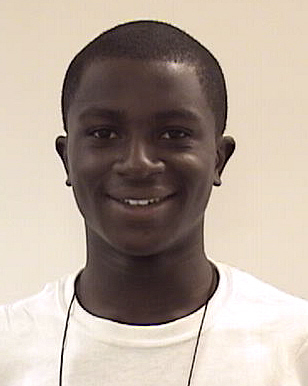

Codify Naija organizes and teaches porgrams for software implementation and design.
Meet our Project Coordinators!

Foundeer and Director of Codify Naija
Philip Abel received a B.SC in Computer Science and Engineering from the prestigous Massachusetts Institutte of Technology in 2015. As a beneficiary of scholarships and an alum of Rochas Foundation College Kano, he has designed this program to teach programmming skills to brilliant but economically disadvantaged students. He is the founder of Codify Naija and designed the curriculum for teaching this summer.
Mohammed Lawan is a recent graduate from the faculty of computer science at Bayero University Kano. He will contribute to this program using his expertise in java based software engineering and knowledge of html and css.